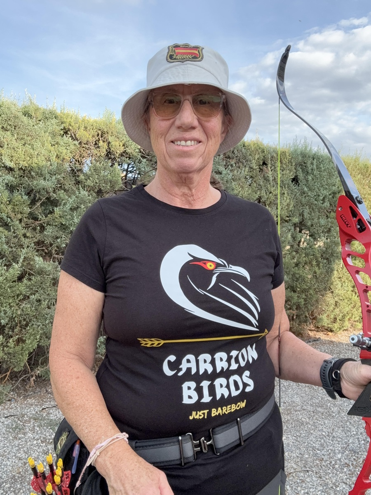
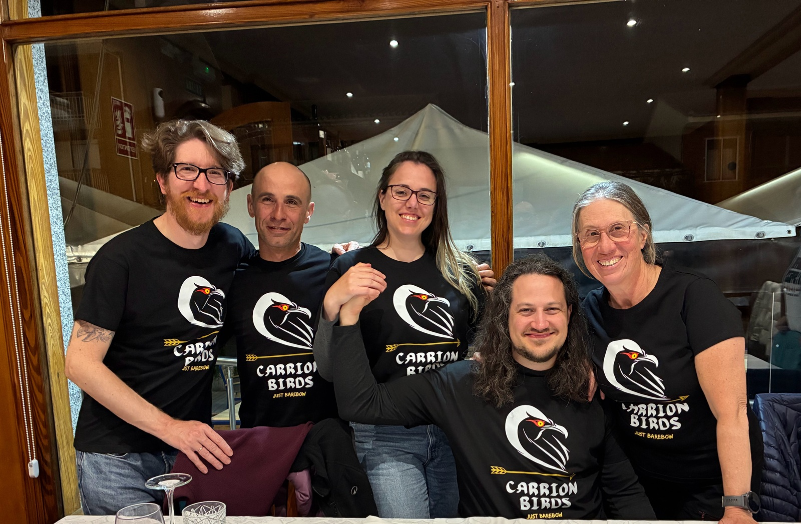
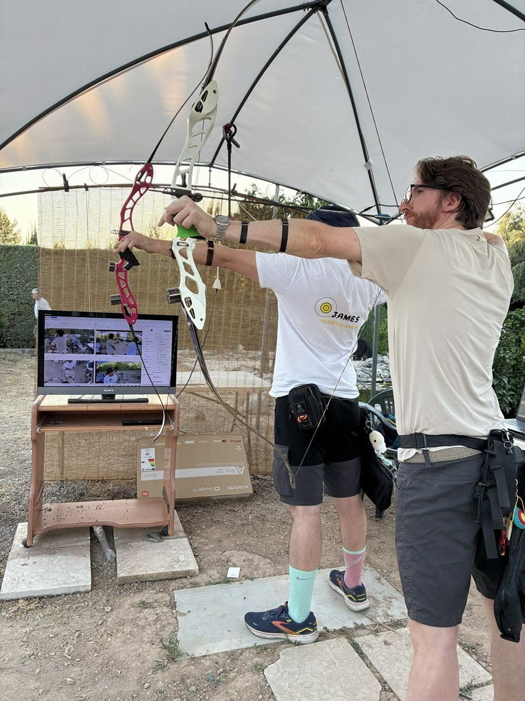

Biblioteca de vídeos
- Técnica de tiro
- Puesta a punto del material
- Tiro en pendiente
- Fabricación de cuerdas
- Montaje de flechas de carbono y de madera
Tiro con arco
Carrion Birds cubre las disciplinas de arco desnudo, tradicional y longbow.
Este espacio online de tecnificación integral es para arqueros y arqueras de cualquier nivel, desde quien empieza hasta quien compite, especializado en las modalidades no olímpicas: arco desnudo, tradicional y longbow.

Luz Carrión Pérez
Técnico Deportivo Nivel II
Siempre me ha gustado la enseñanza, porque creo que es la mejor manera de seguir aprendiendo. Así que, cuando me convertí en arquera, siempre me rondaba la idea de ser entrenadora. Y me formé para ello, aun sin tener claro si algún día me serviría realmente para entrenar a otros arqueros.
La base de la formación que quiero dar se traduce principalmente en lo siguiente:


El área privada está reservada para quienes forman parte del centro virtual. ¿Tienes dudas o quieres empezar? Escríbeme: